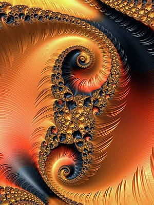
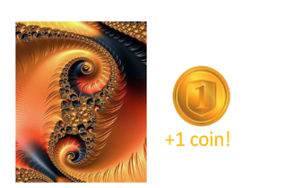
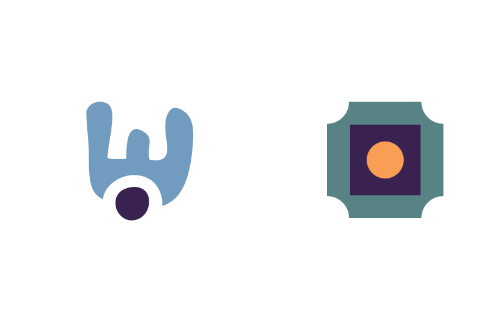
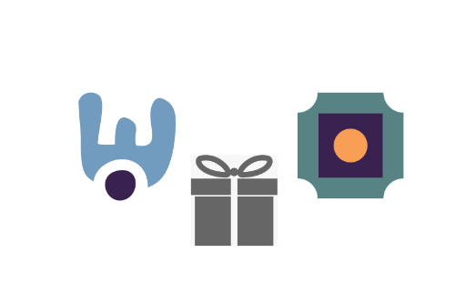

<!DOCTYPE html>
<html>

<head>
    <title>Game</title>
    
    <script src="lib/vendors/jspsych-7.1.2/jspsych.js"></script>
    <script src="lib/vendors/jspsych-7.1.2/plugin-html-keyboard-response.js"></script>
    <script src="lib/vendors/jspsych-7.1.2/plugin-html-button-response.js"></script>
    <script src="lib/vendors/jspsych-7.1.2/plugin-preload.js"></script>
    <script src="lib/vendors/jspsych-7.1.2/plugin-fullscreen.js"></script>
    <script src="lib/vendors/jspsych-7.1.2/plugin-instructions.js"></script>
    <script src="lib/vendors/jspsych-7.1.2/plugin-survey-likert.js"></script>
    <script src="lib/vendors/jspsych-7.1.2/plugin-survey-text.js"></script>
    <script src="lib/vendors/jspsych-7.1.2/plugin-survey-multi-choice.js"></script>
    <link rel="stylesheet" href="lib/vendors/jspsych-7.1.2/jspsych.css">
    <link href="./css/my_exp.css" rel="stylesheet" type="text/css">
    <script type="text/javascript" src="lib/jspsych-7-pavlovia-2022.1.1.js"></script>

    <!-- local run
    <script src="jspsych/dist/jspsych.js"></script>
    <script src="jspsych/dist/plugin-html-keyboard-response.js"></script>
    <script src="jspsych/dist/plugin-html-button-response.js"></script>
    <script src="jspsych/dist/plugin-preload.js"></script>
    <script src="jspsych/dist/plugin-instructions.js"></script>
    <script src="jspsych/dist/plugin-survey-likert.js"></script>
    <script src="jspsych/dist/plugin-survey-text.js"></script>
    <script src="jspsych/dist/plugin-survey-multi-choice.js"></script>
    <script src="jspsych/dist/plugin-fullscreen.js"></script>
    <script src="jspsych/dist/plugin-html-slider-response.js"></script>
    <link href="jspsych/dist/jspsych.css" rel="stylesheet" type="text/css" />
    <link href="css/my_exp.css" rel="stylesheet" type="text/css"/>-->
</head>

<body>
    <script>

        /*this defines the css properties according to the window_screen_size*/
        var root = document.documentElement;
        var vis_angle_px = 105
        var square_width = 51.4
        root.style.setProperty('--top_middle', window.screen.height / 2 + "px");
        root.style.setProperty('--left_middle', window.screen.width / 2 - (square_width / 2) + "px");
        //---------------------------------------------------------------------------------------------
        root.style.setProperty('--left_card', window.screen.width / 2 - 2.3 * vis_angle_px + "px");
        root.style.setProperty('--right_card', window.screen.width / 2 - 2.3 * vis_angle_px + "px");
        root.style.setProperty('--top_card', window.screen.height / 2 - 90 + "px");
        root.style.setProperty('--top_reward', window.screen.height / 2 + "px");
        root.style.setProperty('--left_reward', window.screen.width / 2 + "px");
        root.style.setProperty('--top_surprise', window.screen.height / 2 + "px");
        root.style.setProperty('--left_surprise', window.screen.width / 2 + "px");
        var jsPsych = initJsPsych({
            on_finish: function () {
                download_csv(jsPsych.data.get().csv());
            }
         });
        // capture info from Prolific
        var subject_id = jsPsych.data.getURLVariable('PROLIFIC_PID');
        if (subject_id==undefined){
            subject_id="DEMO"
        }
        var study_id = jsPsych.data.getURLVariable('STUDY_ID');
        var session_id = jsPsych.data.getURLVariable('SESSION_ID');

        jsPsych.data.addProperties({
        subject_id: subject_id,
        study_id: study_id,
        session_id: session_id
        });
        /*---------------------------------------------------- 
        Card game starts
        ------------------------------------------------------*/
        /*full screen */
        var enter_fullscreen = {
            type: jsPsychFullscreen,
            fullscreen_mode: true,
            message: '<p>This experiment will be in fullscreen mode. <br> <b>Please make sure your browser is on 100% zoom, and your keyboard is on the English language.</b></p>'
                }
        
        var id_num = {
        type: jsPsychSurveyText,
        questions: [
            {prompt: 'Please enter the 3 <b>last</b> digits of your ID number'}
        ]
        }
        var start_feedback = {
            type: jsPsychHtmlKeyboardResponse,
            stimulus: 'Please take a couple of minutes to tell us <b>what you liked and disliked about the experiment.</b> We really appreciate your honest and detailed feedback. You can not imagine how much it would mean for our research. <br> <br> Press any key to continue'
        }
        var get_feedback = {
        type: jsPsychSurveyText,
        questions: [
            {prompt: 'Were the instructions for the cards game clear?<br> <b>Please explain your answer</b>', required: true},
            {prompt: 'Were the instructions about the shapes clear?<br> <b>Please explain your answer</b>', required: true},
            {prompt: 'Were you convinced all along the experiment that the key respones indeed have no meaning in terms of coin winning chances?<br> <b>Please explain your answer</b>', required: true},
            {prompt: 'Could you explain your feelings throughout completing the task?<br> <b>Please explain your answer</b>', required: true},
            {prompt: 'Do you think any graphical detail could be improved? <br> <b>Please explain your answer</b>', required: true},
            {prompt: 'Do you think any technical detail could be improved? <br> <b>Please explain your answer</b>', required: true},
            {prompt: 'Did you feel like you managed to learn which cards are better?<br> <b>Please explain your answer</b>', required: true},
            {prompt: 'What was your experience while choosing the shapes? How confusing was it?<br> <b>Please explain your answer</b>', required: true},
            {prompt: 'Do you think you would act differently had real money was offered for every coin you earn?<br> <b>Please explain your answer</b>', required: true},
        ]
        }
        var labels_pqb= [
        "Strongly Disagree", 
        "Disagree", 
        "Neutral", 
        "Agree", 
        "Strongly Agree"
      ]
        var start_pqb = {
            type: jsPsychHtmlKeyboardResponse,
            stimulus: 'We will now ask you to answer a questionnaire. Please be sure that all data is saved anonymously</b> <br> <br> <b>Press any key to continue</b>'
        }
        var pqb = {
        type: jsPsychSurveyLikert,
        questions: [
            {prompt: "Do you sometimes feel that people are talking about you?",labels: labels_pqb, required: true},
            {prompt: "Do you sometimes feel that other people are watching you?",labels: labels_pqb, required: true},
            {prompt: "When shopping, do you get the feeling that other people are taking notice of you?",labels: labels_pqb, required: true},
            {prompt: "I often feel that others have it in for me. (Others trying to make things difficult for me.)",labels: labels_pqb, required: true},
            {prompt: 'Do you often have to keep an eye out to stop people from taking advantage of you?',labels: labels_pqb, required: true},
            {prompt: 'Do you feel that you cannot get “close” to people?',labels: labels_pqb, required: true},
            {prompt: 'I find it hard to be emotionally close to other people.',labels: labels_pqb, required: true},
            {prompt: 'Do you feel that there is no one you are really close to outside of your immediate family, or people you can confide in or talk to about personal problems?',labels: labels_pqb, required: true},
            {prompt: 'I tend to keep my feelings to myself.',labels: labels_pqb, required: true},
            {prompt: 'I rarely laugh and smile.',labels: labels_pqb, required: true},
            {prompt: 'I am not good at expressing my true feelings by the way I talk and look.',labels: labels_pqb, required: true},
            {prompt: 'Other people see me as slightly eccentric (odd).',labels: labels_pqb, required: true},
            {prompt: 'I am an odd, unusual person.',labels: labels_pqb, required: true},
            {prompt: 'I have some eccentric (odd) habits.',labels: labels_pqb, required: true},
            {prompt: 'People sometimes comment on my unusual mannerisms and habits.',labels: labels_pqb, required: true},
            {prompt: 'Do you often feel nervous when you are in a group of unfamiliar people?',labels: labels_pqb, required: true},
            {prompt: 'I get anxious when meeting people for the first time.',labels: labels_pqb, required: true},
            {prompt: 'I feel very uncomfortable in social situations involving unfamiliar people.',labels: labels_pqb, required: true},
            {prompt: 'I sometimes avoid going to places where there will be many people because I will get anxious.',labels: labels_pqb, required: true},
            {prompt: 'Do you believe in telepathy (mind-reading)?',labels: labels_pqb, required: true},
            {prompt: 'Do you believe in clairvoyance (psychic forces, fortune telling)?',labels: labels_pqb, required: true},
            {prompt: 'Have you had experiences with astrology, seeing the future, UFO’s, ESP, or a sixth sense?',labels: labels_pqb, required: true},
            {prompt: 'Have you ever felt that you are communicating with another person telepathically (by mind-reading)?',labels: labels_pqb, required: true},
            {prompt: 'I sometimes jump quickly from one topic to another when speaking.',labels: labels_pqb, required: true},
            {prompt: 'Do you tend to wander off the topic when having a conversation?',labels: labels_pqb, required: true},
            {prompt: 'I often ramble on too much when speaking.',labels: labels_pqb, required: true},
            {prompt: 'I sometimes forget what I am trying to say.',labels: labels_pqb, required: true},
            {prompt: 'I often hear a voice speaking my thoughts aloud.',labels: labels_pqb, required: true},
            {prompt: 'When you look at a person or yourself in a mirror, have you ever seen the face change right before your eyes?',labels: labels_pqb, required: true},
            {prompt: 'Are your thoughts sometimes so strong that you can almost hear them?',labels: labels_pqb, required: true},
            {prompt: 'Do everyday things seem unusually large or small?',labels: labels_pqb, required: true}
        ]
        }
        /*---------------------------------------------------- 
        Define images
        ------------------------------------------------------*/
        var instructions_images = ['images/group_shapes.png','images/group_shapes_surprise.png','images/reward_example1.png']
        var practice_deck_images = ['images/old/17.jpeg', 'images/old/18.jpg', 'images/old/19.jpg', 'images/old/20.jpg']
        var test_deck_images = ['images/old/1.jpg', 'images/old/2.jpg', 'images/old/3.jpg', 'images/old/4.jpg', 'images/old/5.jpg', 'images/old/6.jpg', 'images/old/7.jpg', 'images/old/8.jpeg'
            , 'images/old/9.jpg', 'images/old/10.jpg', 'images/old/11.jpg', 'images/old/12.jpg', 'images/old/13.jpg', 'images/old/14.jpg', 'images/old/15.jpg', 'images/old/16.jpg' ]
        var reward_images = ['images/zero_coins.png', 'images/won1-no-back1.png']
        var fixation = '<div class="fixation">+</div>'
        var surprise= 'images/surprise.jpg'
        var catch_trials_images = jsPsych.randomization.shuffle(['images/catch_trial/1.jpg', 'images/catch_trial/2.jpg', 'images/catch_trial/3.jpg', 'images/catch_trial/4.jpg', 'images/catch_trial/5.jpg', 'images/catch_trial/6.jpg', 'images/catch_trial/7.png', 'images/catch_trial/8.jpg',
                                    'images/catch_trial/9.jpg', 'images/catch_trial/10.jpg', 'images/catch_trial/11.jpg', 'images/catch_trial/12.jpg', 'images/catch_trial/13.jpg', 'images/catch_trial/14.jpg', 'images/catch_trial/15.jpg', 'images/catch_trial/16.jpg',
                                    'images/catch_trial/17.jpg', 'images/catch_trial/18.jpg', 'images/catch_trial/19.jpg', 'images/catch_trial/20.jpg', 'images/catch_trial/21.jpg', 'images/catch_trial/22.jpg', 'images/catch_trial/23.jpg', 'images/catch_trial/24.jpg',
                                    'images/catch_trial/25.jpg', 'images/catch_trial/26.jpg', 'images/catch_trial/27.jpg', 'images/catch_trial/28.jpg', 'images/catch_trial/29.jpg', 'images/catch_trial/30.jpg', 'images/catch_trial/31.jpg', 'images/catch_trial/32.jpg',
                                    'images/catch_trial/33.jpg', 'images/catch_trial/34.jpg', 'images/catch_trial/35.jpg', 'images/catch_trial/36.jpg', 'images/catch_trial/37.jpg', 'images/catch_trial/38.jpg', 'images/catch_trial/39.jpg', 'images/catch_trial/40.jpg',
                                    'images/catch_trial/41.jpg', 'images/catch_trial/42.jpg', 'images/catch_trial/43.jpg', 'images/catch_trial/44.jpg', 'images/catch_trial/45.jpg', 'images/catch_trial/46.jpg', 'images/catch_trial/47.jpg', 'images/catch_trial/48.jpg',
                                    'images/catch_trial/49.jpg', 'images/catch_trial/50.jpg', 'images/catch_trial/51.jpg', 'images/catch_trial/52.jpg', 'images/catch_trial/53.jpg', 'images/catch_trial/54.jpg', 'images/catch_trial/55.jpg', 'images/catch_trial/56.jpg',
                                    'images/catch_trial/57.jpg', 'images/catch_trial/58.jpg', 'images/catch_trial/59.jpg', 'images/catch_trial/60.jpg', 'images/catch_trial/61.jpg', 'images/catch_trial/62.jpg', 'images/catch_trial/63.jpg', 'images/catch_trial/64.jpg'])
        var practice_catch_trials_images= jsPsych.randomization.shuffle(['images/practice_catch_trials/1.png','images/practice_catch_trials/2.png','images/practice_catch_trials/3.png','images/practice_catch_trials/4.png'])
        /*----------------------------------------------------
        Define game-related settings
        ------------------------------------------------------*/
        var block_type=Number(jsPsych.randomization.sampleWithoutReplacement([0,1,2,3], 1));
        var trial_type=0;
        //0-A B, 1- C D, 2-catch trial
        var catch_trials1 = [4, 7, 16, 18, 21, 23, 25, 27, 29, 31, 34, 37, 39, 42, 46, 49]
        var catch_trials2 = [3, 6, 11, 13, 16, 18, 20, 22, 25, 31, 35, 37, 40, 42, 46, 48]
        var trial_order = create_trial_order()
        var catch_trials_number = 0;
        var sum_reward_catch_trials=0;
        var sum_reward_test_trials=0;
        var practice_order=[0,2,1,1,2,0]
        var practice_number=-1;
        var practice_type;
        var invalid=false;
        var sum_reward_all=0;
        /*---------------------------------------------------- 
        Start instructions
        ------------------------------------------------------*/
        var instructions_cards = {
            on_start: function () {
                if (document.querySelector('#cursor-toggle') != null) {
                    document.querySelector('#cursor-toggle').remove()
                }
            },
            type: jsPsychInstructions,
            pages: ["<p><b><u>Welcome to the card game</u></b></p>",
                //+ "<p style='text-align:center'>Your winnings in this game will earn you additional payment bonus for the study."
                //+ " If no extra money will be earned in the card game, you will still get ~£2.5 for completing this session of the study."
                //+ " However, <b>you can gain up to an extra £0.75 based on winnings in the game.</b></p>",
                "<p style='text-align:center'> We will now provide instructions regarding the card game. Please read them carefully. <br>"
                + "Feel free to go back and forth between the screens.</p> "
                , "<p style='text-align:left'>At the end of the instructions, <b>we will ask you to complete a short quiz about them</b>, to make sure everything is well understood.</p>",
                "<p style='text-align:center'> Below is an example of a card-deck of four cards, very much like the cards in the game to follow. </p>" +
                ""+""+
                ""+"",
                "<p> On each step, only two cards from the 4-card deck will be offered (as shown in the example below).<br><p>You will be able to select the <b>left card by pressing 'S'</b> and the <b>right card by pressing 'K'</b> on your keyboard.</p>"
                + ""+ "",
                "<p style='text-align:center'>After selecting the card, you will see an outcome in the middle of the screen, as shown below.</p>"
                + "<br><br>",
                "<p><b>Winning very much depends on the card you chose - some cards are better than others in their deck.</b><br>"
                + "Your task is to find out which card is the best in each deck at any time and choose it.<br><br>"+
                "<b>Please do your best to respond as fast as you can while trying to earn as many coins.</b></p>",
                "<p><u>Please note that the winning chances of one card are unrelated to the winning chances of another card</u>.<br> Learning about one card tells you nothing about the other cards."
                +"<br>A card's winning chances <b>do not change</b> throughout the game.</p>",
                "<p style='text-align:center'><u>Two important things to remember:</u><br>"
                 + " 1.<b> Only the cards are related to your winning chances - </b> the location of the card and the response key you used to select it do not influence the chances of winning a coin.<br><br>"
                 + " 2. <b>The chance that each card will give you money has nothing to do with the other cards - </b> you can't learn about one card from the money rewards you got for the other.</p>"],
                show_clickable_nav: true
        };
        var instructions_combined = {
            on_start: function () {
                if (document.querySelector('#cursor-toggle') != null) {
                    document.querySelector('#cursor-toggle').remove()
                }
            },
                
            type: jsPsychInstructions,
            pages: [" <p style='text-align:center'>In the experiment you will play the card game that has been explained above."
                +"<br>In addition, once every few steps, you will be presented with <b>two new shapes</b> as in the example below.</p>"
                +"<p>You will only see each shape once.</p>"
                +"<br> <br>",
                "<p><br>You will need to select one of the shapes, but you will not see whether you won a coin or not."
                +"<br> <br>"
                +"Instead, you will see a gray box",
                "<p>For shape choices a <b>random lottery</b> (just like a coin flip) behind the scenes will determine whether you won a coin or not.</p>"
                +"<p>Only at the end of each part of the experiment, you will be informed of the total extra amount you earned from shapes steps.</p>"
                +"<br>",
                "<p>As in the card game, in order the choose the left shape press <b>'S'</b> and in order the choose the right shape press <b>'K'</b>.</p>"
                +"<br> <br>"],
                show_clickable_nav: true
        }
        var start_instructions_test = {
            on_start: function () {
                if (document.querySelector('#cursor-toggle') != null)
                    document.querySelector('#cursor-toggle').remove()
            },
            type: jsPsychHtmlKeyboardResponse,
            stimulus: "<p> <br><br> You will now move on to a quick quiz to make sure you understood the instructions. If you make a mistake, you will need to go through the instructions again. <br><br> <b> Press any key to continue</b></p>"
        }
        var Q1_2_options = ["2", "4", "6"];
        var Q3_options = ["Click on it.", "Press the LEFT or RIGHT arrow keys.", "Press the 'S' or 'K' key with your LEFT or RIGHT hand."];
        var Q4_5_options = ["True", "False"];
        var Q6_options = ["True", "False"];
        var Q7_options = ["True - the response keys are related to the winning chances.", "False - you won't win more or less using RIGHT or LEFT response keys. Only the cards are related to your chance of winning."];
        var Q8_options = ["After choosing the shape", "At the end of each part of the experiment", "At the end of the game", "Never"];
        var Q9_options = ["True", "False"];


        var instructions_test = {
            type: jsPsychSurveyMultiChoice,
            questions: [
                { prompt: "What is the size of a card deck?", name: 'deck_size', correct: '4', options: Q1_2_options, required: true },
                { prompt: "How many cards are presented on each step?", name: 'cards_step', correct: '2', options: Q1_2_options, required: true },
                { prompt: "How do you choose a card?", name: 'choose_card', correct: "Press the 'S' or 'K' key with your LEFT or RIGHT hand.", options: Q3_options, required: true },
                { prompt: "Some cards are better than others.", name: 'better_cards', correct: 'True', options: Q4_5_options, required: true },
                { prompt: "How 'good' or 'bad' a card is will change along the game.", name: 'value_change', correct: 'False', options: Q4_5_options, required: true },
                { prompt: "If one card frequantly leads to a coin, it means the other card will probably lead to a coin less often", name: 'value_independence', correct: 'False', options: Q6_options, required: true },
                { prompt: "If you use the RIGHT and not the LEFT response key, you might win more", name: 'location_value', correct: "False - you won't win more or less using RIGHT or LEFT response keys. Only the cards are related to your chance of winning.", options: Q7_options, required: true },
                { prompt: "When will you know how many coins you earned from the shape lottery steps?", name: 'reward_announce', correct: "At the end of each part of the experiment", options: Q8_options, required: true },
                { prompt: "Each shape will be presented only one time throughout the game.", name: 'shapes_repeated', correct: 'True', options: Q9_options, required: true },

            ],
        };

        var if_trial = {
            type: jsPsychHtmlButtonResponse,
            stimulus: "<p>Sorry. You made a mistake.<br>"
                + "Let's go back to the instructions. "
                + "Please read them carefully before submitting your answers. <br>"
                + "Thank you!",
            choices: ['Back to instructions'],
            on_finish: function () {
                practice_number=-1;
                catch_trials_number=0;
            }
        }
        var dominant_hand = {
        type: jsPsychSurveyMultiChoice,
        on_start: function () {
        if (document.querySelector('#cursor-toggle') != null)
                    document.querySelector('#cursor-toggle').remove()
            },
        questions: [
        {
        prompt: "What is your dominant hand?", 
        name: 'dominant_hand', 
        options: ['Right', 'Left', 'Both', "I don't know"], 
        required: true
        }]
        };

    var frustration = {
    type: jsPsychSurveyLikert,
    on_start: function () {
        if (document.querySelector('#cursor-toggle') != null)
                    document.querySelector('#cursor-toggle').remove()
            }
        ,
    questions: [
    {
      prompt: "Please rate how frustrated you currently feel about part of the task you just completed.", 
      labels: [
        "Not at all frustrated", 
        "Slightly frustrated", 
        "Moderately frustrated", 
        "Very frustrated", 
        "Extremely frustrated"
      ]
    }
    ],
    on_finish:function () {
        document.querySelector('head').insertAdjacentHTML('beforeend', '<style id="cursor-toggle"> html { cursor: none; } </style>')
    }
        };
        var to_repeat;
        var check_answers = {
            timeline: [if_trial],
            conditional_function: function () {
                // get the data from the previous trial,
                // and check which key was pressed
                to_repeat = false;
                var responses_to_test = jsPsych.data.getLastTrialData().trials[0].response
                for (i = 0; i < instructions_test.questions.length; i++) {
                    current_name = instructions_test.questions[i].name;
                    current_correct = instructions_test.questions[i].correct
                    if (current_correct != responses_to_test[current_name]) {
                        to_repeat = true;
                        return to_repeat
                    }
                    else {
                        to_repeat = false;

                    }
                }
                return to_repeat
            }
        }
        /*---------------------------------------------------- 
        Functions for card game
        ------------------------------------------------------*/
        function create_trial_order() {
            chosen_indexes = jsPsych.randomization.sampleWithoutReplacement([1,2], 1)
            if (chosen_indexes == 1){
                catch_trial_indexes = catch_trials1
            }
            else{
                catch_trial_indexes = catch_trials2
            }
            other_trials = jsPsych.randomization.shuffle([0,0,0,0,0,0,0,0,0,0,0,0,0,0,0,0,0,1,1,1,1,1,1,1,1,1,1,1,1,1,1,1,1,1])
            for (var i = 0; i < 16; i++){
                idx = catch_trial_indexes[i]
                other_trials.splice(idx, 0, 2) //insert catch trial at index idx
            }
            return other_trials
        }

        function draw_show_cards(deck, catch_deck, practice) {
            if (practice==1){ //practice only cards
                drawn= jsPsych.randomization.sampleWithoutReplacement([0,2],1);
                if (drawn==0){
                    arr= jsPsych.randomization.shuffle([deck[0], deck[1]]);
                }
                else{
                    arr= jsPsych.randomization.shuffle([deck[2], deck[3]]);
                }
                left_card=arr[0];
                right_card=arr[1];
                left_with_tag = ""
                right_with_tag = ""
                return left_with_tag + right_with_tag + fixation;
            }
            if (practice==2){ //full practice
                trial_type=practice_order[practice_number];
            }
            if (trial_type==0){ //A B
                arr= jsPsych.randomization.shuffle([deck[0],deck[1]])
                left_card=arr[0];
                right_card=arr[1];
                left_with_tag = ""
                right_with_tag = ""
            }
            else if (trial_type==1){// C D
                arr= jsPsych.randomization.shuffle([deck[2],deck[3]])
                left_card=arr[0];
                right_card=arr[1];
                left_with_tag = ""
                right_with_tag = ""
            }
            else{ // catch trial
                left_card= catch_deck[catch_trials_number]
                right_card= catch_deck[catch_trials_number+1]
                catch_trials_number+=2;
                if(block>=2){
                    left_with_tag = ""
                    right_with_tag = ""
                }
                else{
                    left_with_tag = ""
                    right_with_tag = ""
                }
                surprise_to_show = ""
                return left_with_tag + surprise_to_show + right_with_tag;

            }

            return left_with_tag + right_with_tag + fixation;
        }

        function show_choice() {
            last_choice = jsPsych.data.getLastTrialData().values()[0].response
            if (last_choice == 's') { 
                selected = 0
                if(trial_type==2 && block>=2){
                    card_to_show = ""  
                }
                else{
                    card_to_show = ""
                }
            }
            else if (last_choice == 'k') {
                selected = 1
                if(trial_type==2 && block>=2){
                    card_to_show = ""
                }
                else{
                    card_to_show = ""
                }
            }
            else {
                selected = null
                reward = 0
                if (last_choice!=null){
                    invalid=true;
                    return '<div style="font-size:40px;">Please press S or K.</div>'
                }
                else{
                    return '<div style="font-size:40px;">Please respond faster!</div>'
                }
            }
            if(trial_type==2){
                surprise_to_show = ""
                return card_to_show + surprise_to_show
            }
            return card_to_show + fixation
        }

        function show_reward (){
            key_selected = jsPsych.data.getLastTrialData().values()[0].key_selected
            if (key_selected == 0) {    
                if(trial_type==2 && block>=2){
                    card_to_show = ""
                }
                else{
                    card_to_show = ""
                }
            }
            else if (key_selected == 1) {
                if(trial_type==2 && block>=2){
                    card_to_show = ""
                }
                else{
                    card_to_show = ""
                }
            }
            else{
                if (invalid==true){
                    invalid=false;
                    return '<div style="font-size:40px;">Please press S or K.</div>'
                }
                else{
                    return '<div style="font-size:40px;">Please respond faster!</div>'
                }
            }
            card_selected = jsPsych.data.getLastTrialData().values()[0].card_selected
            if (trial_type == 2){
                prob_reward = 0.5;
            }
            else{
                prob_reward = FB_array[card_selected+block_type*4];
            }
            prob_unreward = 1 - prob_reward;
            reward = jsPsych.randomization.sampleWithReplacement([0, 1], 1, [prob_unreward, prob_reward])[0];
            reward_to_show = ""
            if (trial_type == 2){
                surprise_to_show = ""
                if(practice_type==0){
                    sum_reward_catch_trials+=reward;
                    sum_reward_all+=reward;
                }
                return card_to_show + surprise_to_show
            }
            else{
                if(practice_type==0){
                    sum_reward_test_trials+=reward;
                    sum_reward_all+=reward;
                }
                return card_to_show + reward_to_show
            }
        }

        function images_for_block_start() {
            images = test_deck_images.slice(block_type * 4, block_type * 4 + 4)
            return images
        }

        /*This function downloads the data */
        var subN = 999
        var IDsub = Date.now();
        function download_csv(csv) {
            var hiddenElement = document.createElement('a');
            file_name = "exp_" + subN + "_" + IDsub.toString() + ".csv"
            hiddenElement.href = 'data:text/csv;charset=utf-8,' + encodeURI(csv);
            hiddenElement.target = '_blank';
            hiddenElement.download = file_name;
            hiddenElement.click();
        }
        /*---------------------------------------------------- 
        Variables for card game
        ------------------------------------------------------*/
        var FB_array = [0.25,0.35,0.25,0.35,0.65,0.75,0.65,0.75,0.1,0.5,0.1,0.5,0.5,0.9,0.5,0.9];
        var current_cards_practice_trial = 0;
        var current_cards_exp_trial = 0;
        var block = 0;
        var blocks = 4;
        var left_card;
        var right_card;
        var selected;
        var reward;

        /*---------------------------------------------------- 
        Start practice
        ------------------------------------------------------*/
        var timeline = [];
        
        /*init connection with pavlovia.org*/
        var pavlovia_init = {
			type: jsPsychPavlovia,
			command: "init"

        };
        timeline.push(pavlovia_init);
        var preload = {
        type: jsPsychPreload,
        images: [instructions_images,practice_deck_images, test_deck_images, reward_images, surprise,catch_trials_images, practice_catch_trials_images]
        };
        timeline.push(preload)
        timeline.push(enter_fullscreen)
        timeline.push(id_num)
        var start_practice_only_cards = {
            type: jsPsychHtmlKeyboardResponse,
            stimulus: "<div>We will now start a few practice trials. <br> Please be ready with your fingers on <b>'S'</b> and <b>'K'</b>. <br><br> <b> Press any key to begin</b></div>",
            post_trial_gap: 1000,
            on_finish: function () { 
                practice_type=1;
                document.querySelector('head').insertAdjacentHTML('beforeend', '<style id="cursor-toggle"> html { cursor: none; } </style>') 
            },
        }
        var start_practice_cards = {
            type: jsPsychHtmlKeyboardResponse,
            stimulus: "<div>We will now start a few practice trials with both the cards and the shapes. <br> Please be ready with your fingers on <b>'S'</b> and <b>'K'</b>. <br><br> <b> Press any key to begin</b></div>",
            post_trial_gap: 1000,
            on_finish: function () { //trial_by_trial condition for practice
                practice_type=2;
                document.querySelector('head').insertAdjacentHTML('beforeend', '<style id="cursor-toggle"> html { cursor: none; } </style>')
            }
        }

        var fixation_cards = {
            type: jsPsychHtmlKeyboardResponse,
            stimulus: fixation,
            choices: "NO_KEYS",
            trial_duration: 900
        }

        var practice_cards = {
            type: jsPsychHtmlKeyboardResponse,
            stimulus: function () {
                if(practice_type==2){
                    practice_number+=1;
                }
                return draw_show_cards(practice_deck_images, practice_catch_trials_images, practice_type)
            },
            choices: "ALL_KEYS",
            trial_duration: 6000,
            data: { phase: 'practice', trial_name: 'cards', trial_num: function () { return current_cards_practice_trial } },

        }

        var practice_choice = {
            type: jsPsychHtmlKeyboardResponse,
            stimulus: show_choice,
            choices: "NO_KEYS",
            trial_duration: 500,
            data: { phase: 'practice', trial_name: 'choice', trial_num: function () { return current_cards_practice_trial } },
            on_finish: function (data) {
                data.key_selected = selected
                if (selected == 0) {
                    data.card_selected = practice_deck_images.indexOf(left_card)
                }
                else if (selected == 1) {
                    data.card_selected = practice_deck_images.indexOf(right_card)
                }
            }
        }

        var practice_reward = {
            type: jsPsychHtmlKeyboardResponse,
            stimulus: function () {
                return show_reward()
            },
            choices: "NO_KEYS",
            trial_duration: 750,
            data: { phase: 'practice', trial_name: 'reward', trial_num: function () { return current_cards_practice_trial } }
            , on_finish: function (data) {
                data.reward = reward;
            }
        }

        /*---------------------------------------------------- 
        Start exp part of card game
        ------------------------------------------------------*/

        var start_exp = {
            type: jsPsychHtmlKeyboardResponse,
            stimulus: '<div> Good job! Practice completed. <br> <br> We will now move on to the real game. Do your best to figure out which cards are better. Good luck!<br><br> <b>Press any key to continue.</b></div>',
            post_trial_gap: 1000,
            on_finish: function () { 
                practice_type=0;
            },
        }

        var start_block = {
            type: jsPsychHtmlKeyboardResponse,
            stimulus: function () {
                block_type=(block_type+1)%4;
                if(block==0){
                    catch_trials_number=0;
                }
                return '<p><b><u> Part ' + (block + 1) + ' out of ' + (blocks) + '</u></b></p>' + '<p style="text-align: left"> You will now start a test block. Below are the four cards that can appear in this round.</p>'
                    + "<p style='text-align: left'>Use the LEFT or RIGHT response keys ('S' or 'K', in correspondence) to make your selection. <br> Please do your best to win as many coins as possible!<br> </p>"
                    + '<p style="text-align: left"><b>Remember that:</b> <br> 1) Only the cards (not the response key that was used to select them) predict an outcome <br> 2) The chance that each card will give you money has nothing to do with the other cards </p>'
                    + '<p><b>Press any key to start</b></p>'
                    + '  ' + '    ' + '    ' + '  '
            },
            choices: "ALL_KEYS",
            post_trial_gap: 1000,
            on_finish: function () { document.querySelector('head').insertAdjacentHTML('beforeend', '<style id="cursor-toggle"> html { cursor: none; } </style>') },
        }

        var exp_cards = {
            type: jsPsychHtmlKeyboardResponse,
            stimulus: function () {
                trial_type=trial_order[current_cards_exp_trial]
                return draw_show_cards(images_for_block_start(), catch_trials_images, 0)
            },
            choices: "ALL_KEYS",
            trial_duration: 6000,
            data: { phase: 'exp', trial_name: 'cards', trial_num: function () { return current_cards_exp_trial },
                    type_of_trial: function () { return (trial_type) }, block_type: function () { return block_type}  
                },
        }

        var exp_choice = {
            type: jsPsychHtmlKeyboardResponse,
            stimulus: show_choice,
            choices: "NO_KEYS",
            trial_duration: 500,
            data: { phase: 'exp', trial_name: 'choice', trial_num: function () { return current_cards_exp_trial },
                    type_of_trial: function () { return trial_type }, block_type: function () { return block_type} },
            on_finish: function (data) {
                data.key_selected = selected
                if (selected == 0) {
                    if( trial_type==2){
                        data.card_selected = catch_trials_images.indexOf(left_card)
                        data.index_right= catch_trials_images.indexOf(right_card)
                        data.index_left= catch_trials_images.indexOf(left_card)
                    }
                    else{
                        data.card_selected = images_for_block_start().indexOf(left_card)
                        data.index_right= images_for_block_start().indexOf(right_card)
                        data.index_left= images_for_block_start().indexOf(left_card)
                    }
                }
                else if (selected == 1) {
                    if( trial_type==2){
                        data.card_selected = catch_trials_images.indexOf(right_card)
                        data.index_right= catch_trials_images.indexOf(right_card)
                        data.index_left= catch_trials_images.indexOf(left_card)
                    }
                    else{
                        data.card_selected = images_for_block_start().indexOf(right_card)
                        data.index_right= images_for_block_start().indexOf(right_card)
                        data.index_left= images_for_block_start().indexOf(left_card)
                    }
                }
            }
        }
        var exp_reward = {
            type: jsPsychHtmlKeyboardResponse,
            stimulus: function () {
                return show_reward()
            },
            choices: "NO_KEYS",
            trial_duration: 750,
            data: {
                phase: 'exp', trial_name: 'reward', trial_num: function () { return current_cards_exp_trial },
                type_of_trial: function () { return trial_type }, block_type: function () { return block_type},
                block: function () { return block } },

            on_finish: function (data) {
                current_cards_exp_trial+=1;
                data.reward = reward;
                data.key_selected = selected
                if (selected == 0) {
                    if( trial_type==2){
                        data.card_selected = catch_trials_images.indexOf(left_card)
                        data.index_right= catch_trials_images.indexOf(right_card)
                        data.index_left= catch_trials_images.indexOf(left_card)
                        data.prob_selected = 0.5
                        data.prob_unselected = 0.5
                    }
                    else{
                        data.card_selected = images_for_block_start().indexOf(left_card)
                        data.index_right= images_for_block_start().indexOf(right_card)
                        data.index_left= images_for_block_start().indexOf(left_card)
                        data.prob_selected = FB_array[data.index_left+block_type*4];
                        data.prob_unselected = FB_array[data.index_right+block_type*4];
                    }
                }
                else if (selected == 1) {
                    if( trial_type==2){
                        data.card_selected = catch_trials_images.indexOf(right_card)
                        data.index_right= catch_trials_images.indexOf(right_card)
                        data.index_left= catch_trials_images.indexOf(left_card)
                        data.prob_selected = 0.5
                        data.prob_unselected = 0.5
                    }
                    else{
                        data.card_selected = images_for_block_start().indexOf(right_card)
                        data.index_right= images_for_block_start().indexOf(right_card)
                        data.index_left= images_for_block_start().indexOf(left_card)
                        data.prob_selected = FB_array[data.index_right+block_type*4];
                        data.prob_unselected = FB_array[data.index_left+block_type*4];
                    }
                }
            }
        }


        var finish_block = {
            type: jsPsychHtmlKeyboardResponse,
            stimulus: function () {
    
                finish_block_string = '<p><b>Good job!</b></p>' + '<p style="text-align: left"><br> Test block <b>' + (block + 1) + ' out of ' + (blocks) + '</b> is over.'
                finish_block_string += ' You earned <b> ' + sum_reward_test_trials + '</b> coins on cards trials and <b>' + sum_reward_catch_trials + '</b> coins on shapes trials.<br>'
                if (block != 3) {
                    finish_block_string += 'You can stretch a little and take a short break while sitting in front of the screen, if needed.</p><p> <br><br><br><b>Press SPACE to continue</b>  </p>'
                }
                else {
                     finish_block_string += 'You finished the task!</p><p> <br><br><br><b>Press SPACE to continue</b></p>'
                 }
                return finish_block_string
            },
            post_trial_gap: 1000,
            choices: [' '],
            on_finish: function () {
                if (block == 1) {
                    catch_trials_number=0;
                    catch_trials_images=jsPsych.randomization.shuffle(catch_trials_images);
                }
                block += 1;
                current_cards_exp_trial = 0;
                trial_order = create_trial_order()
                sum_reward_catch_trials=0;
                sum_reward_test_trials=0;
            }
        }

        var finish_learning = {
            type: jsPsychHtmlButtonResponse,
            on_start: function () {
                if (document.querySelector('#cursor-toggle') != null)
                    document.querySelector('#cursor-toggle').remove()
            },
            stimulus: function () {
                return "<p><b>Congratulations!</b> <br><br> You successfully finished the task!<br> <b>Please send the code '2G47HT' to the experimenter to receive your credit.</b></p>"
            },
            choices:["Click here to return to Prolific and complete the study"]
            , button_html: ['<a href=https://app.prolific.co/submissions/complete?cc=XXXXXXX target="_blank"> %choice%</a>']
        }


        /*---------------------------------------------------- 
        Define timeline for card part
        ------------------------------------------------------*/
        var demo_procedure_only_cards = {
            timeline: [fixation_cards, practice_cards, practice_choice, practice_reward],
            repetitions: 1  //every trial takes 8.15 sec, 6 trials = 49 sec
        }

        var demo_procedure_cards = {
            timeline: [fixation_cards, practice_cards, practice_choice, practice_reward],
            repetitions: 1 //every trial takes 8.15 sec, 6 trials = 49 sec
        }

        var instructions_loop = {
            timeline: [instructions_cards, start_practice_only_cards, demo_procedure_only_cards, instructions_combined, start_practice_cards, demo_procedure_cards,start_instructions_test, instructions_test, check_answers],
            //timeline: [instructions_combined, start_practice_cards, demo_procedure_cards,start_instructions_test, instructions_test, check_answers],
            loop_function: function () {
                if (to_repeat == true) {
                    return true;
                } else {
                    return false;
                }
            }
        }
        var test_procedure_cards = {
            timeline: [fixation_cards, exp_cards, exp_choice, exp_reward],
            repetitions: 1 // 8.15sec per trial - 50 trials per block. total = 6.8 minutes per block.
        }
        var test_blocks = {
            timeline: [start_block, test_procedure_cards, finish_block,frustration],
            repetitions: 1
        }

        var full_procedure_cards = {
            timeline: [instructions_loop, start_exp, test_blocks,dominant_hand,start_pqb,pqb,start_feedback,get_feedback,finish_learning]
            //timeline: [start_exp, test_blocks,finish_learning]


        }
        timeline.push(full_procedure_cards)
    /* finish connection with pavlovia.org */
    var pavlovia_finish = {
        type: jsPsychPavlovia,
        command: "finish",
        participantId: subject_id
        };
    timeline.push(pavlovia_finish);
    jsPsych.run(timeline);
    </script>

</body>

</html>
